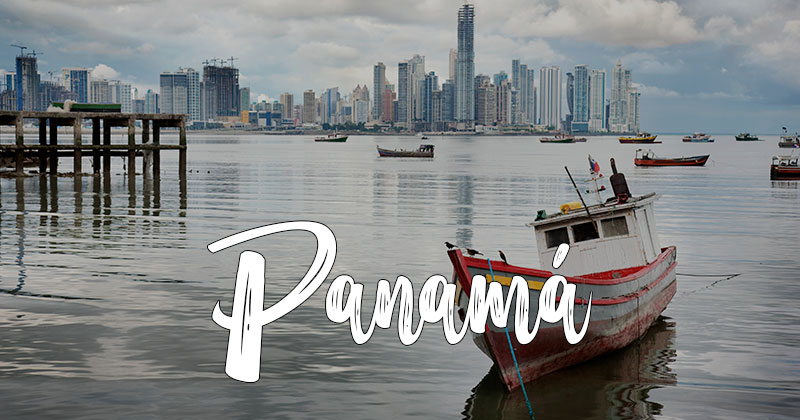
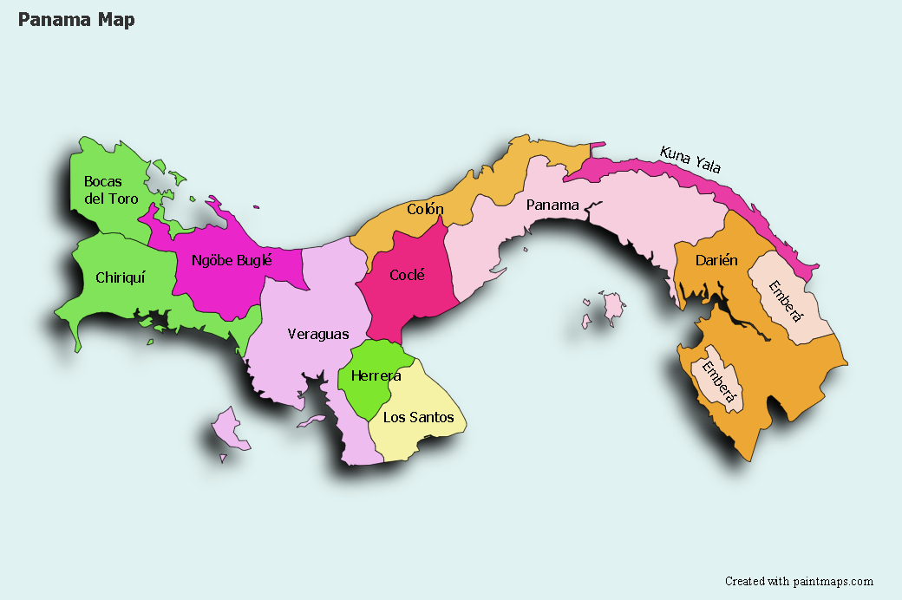

Simbolos patrios

Bandera
Blanco: Representa la paz y la unidad que debe reinar en la nueva nación. la estrella azul: Simboliza «la pureza y la honestidad» que habrán de formar la vida cívica de la patria. La estrella roja: Simboliza «la autoridad y la ley» que habrán de imponer el imperio de estas virtudes.

Escudo
El Escudo Nacional, ideado por Don Nicanor Villalaz Lamela, e interpretado artísticamente por don Max Lemm Bielert, se describe en términos heráldicos

Flor nacional
La flor del Espíritu Santo pertenece a la familia de las orquídeas, es una planta de terrestre o epífita, de hojas carnosas, originaria de Panamá, de donde es flor nacional y hay mayor cantidad conocida, y también encontrada en algunas áreas de Colombia y Ecuador.

Árbol nacional
El panamá, camoruco o anacahuita es un árbol de gran tamaño oriundo de América Central y norte de Sudamérica, de tronco recto ramificado a gran altura y que se encuentra ampliamente distribuido desde México hasta Venezuela, Colombia e inclusive en las Antillas.

Animal nacional
El Águila Harpía es el ave nacional de Panamá, su hábitat se extiende desde Centroamérica hasta Brasil. Es un depredador que ama el bocado que habita en los árboles. Ella representa el símbolo de la diversidad biológica
Historia
La ciudad de Panamá fue fundada el 15 de agosto de 1519 por Pedro Arias Dávila, siendo la primera ciudad española en las costas del Mar del Sur u Océano Pacífico y la más antigua de Tierra Firme que existe hasta nuestros días como ciudad. Su fundación reemplazó a las anteriores ciudades de Santa María la Antigua del Darién y Acla, convirtiéndose en la capital de Castilla del Oro. El 15 de septiembre de 1521 recibió, mediante real cédula, el título de ciudad y un escudo de armas conferido por Carlos V de España.

Extención territorial
75.517 km²

Lugares turisticos de Nicaragua
- Canal de Panamá
- Casco Antiguo
- Bocas del Toro
- Boquete
- Los indios Emberra
Lista de departamentos
